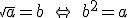
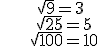
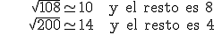

Potencias y raíces
Raíces

Llamamos a a radicando y a b raíz cuadrada.
–Ejemplos:

Nota. Debes memorizar los siguientes cuadrados:
12=1 22=4 32=9 42=16 52=25
62=36 72=49 82=64 92=81 102=100
112=121 122=144 132=169 142=196 152=225
202=400 252=625 302=900
(n+1)2= n2+ n + (n + 1)
Los números que tienen una raíz cuadrada exacta se llaman cuadrados perfectos. Si el número no es un cuadrado perfecto, debemos buscar su raíz cuadrada entera, es el mayor cuadrado perfecto menor que el número.
Ejemplo:

Un número entero puede tener:
- Dos raíces cuadradas (que sean números enteros):
√9 = 3 porque 32 = 9√9 = -3 porque (-3)2 = 9
Habitualmente denotamos a estas raíces como √9 y -√9
- Dos raíces cuadradas (que no sean números enteros): √2 = ± 1,4142...
- Una raíz cuadrada: √0 = 0
- Ninguna raíz cuadrada: √-4
Ejercicio.Calcula:
a) √121=
b) √-81=
c) √125=
d) √37=
e)√(-2)2=
Soluciones: a) 11; b) Φ; c) 11 y resto 4; d) 6 y resto 1; e) 2
Obra publicada con Licencia Creative Commons Reconocimiento No comercial Compartir igual 3.0